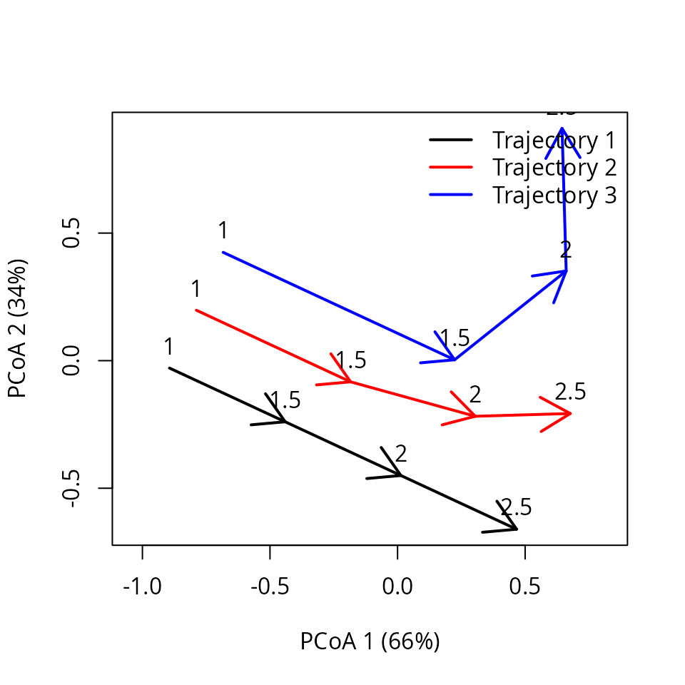
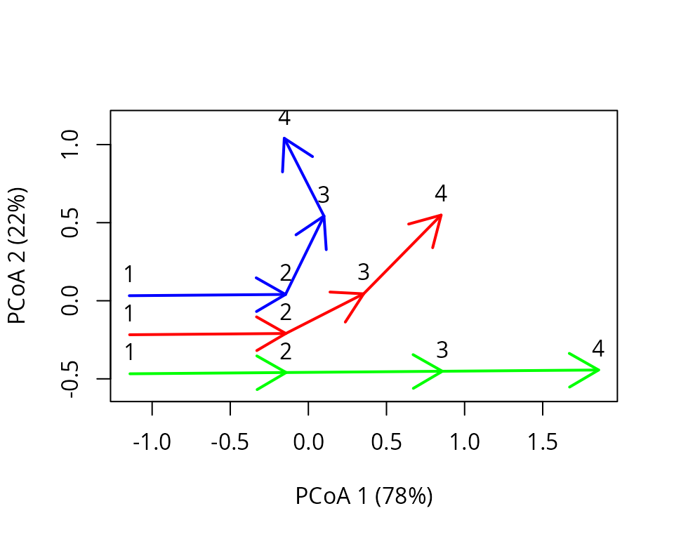
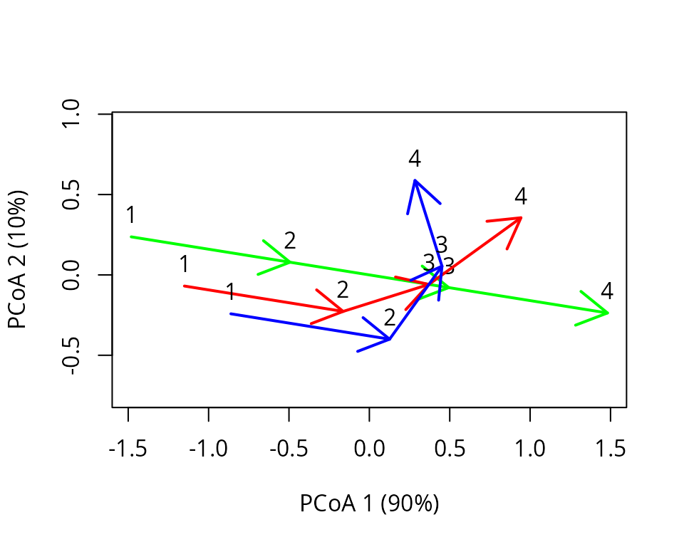
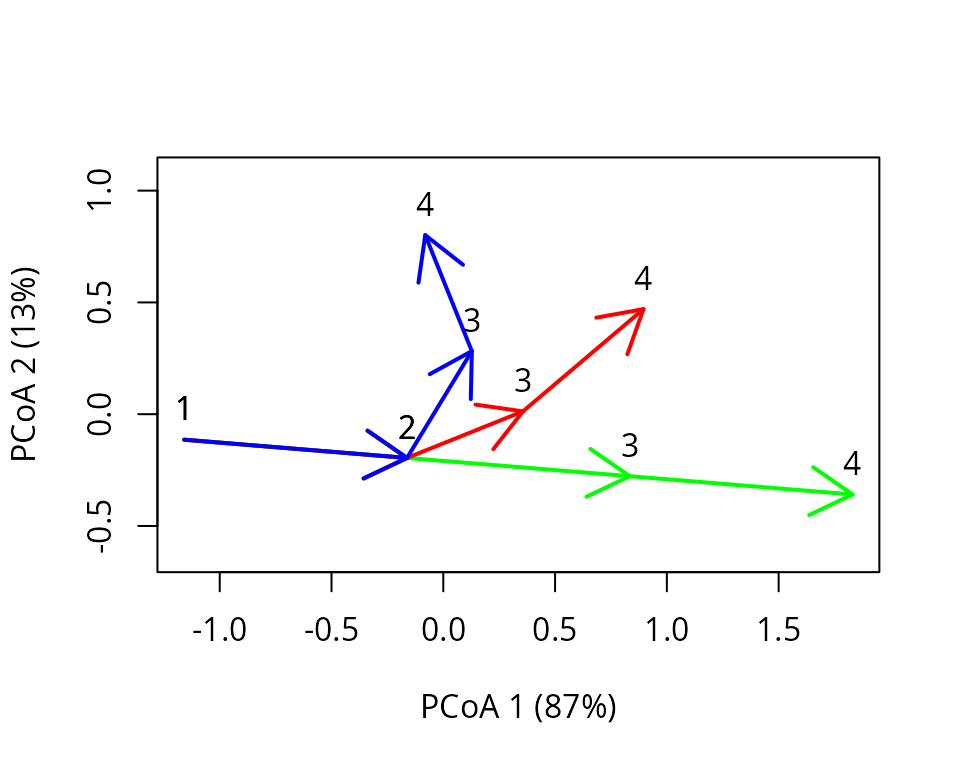
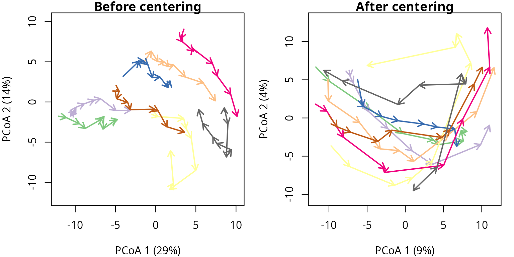

Transforming trajectories
Miquel De Cáceres / Nicolas Djeghri
2025-05-22
Source:vignettes/TransformingTrajectories.Rmd
TransformingTrajectories.Rmd1. Introduction
In this vignette you will learn to transform trajectory data in three different ways. By transforming, we mean modifying the distance matrix that represents the resemblance between ecological states. This is equivalent to (implicitly) modifying the coordinates (position) of ecological states in the space. However, one of the transformations also includes a modification of observation times.
First of all, we load ecotraj:
## Loading required package: Rcpp2. Interpolating trajectories
2.1 What is trajectory interpolation?
Sometimes the available trajectory data is non-synchronous, due to missing observations or observation times that do not match completely. This is not normally a limitation for ETA, but there are some analyses that require synchronous trajectory data. Trajectory interpolation allows recalculating positions along trajectory pathways so that observation times are the same across all trajectories, hence obtaining a synchronous data set. Interpolation is done in the multivariate space but is linear.
2.2 Simple interpolation example
We will employ a simple example similar to that used in the introduction to trajectory analysis. Let us first define the vectors that describe the observation of each entity (i.e. site):
entities = c("1","1","1","1","2","2","2","2","3","3","3","3")
times <- c(1.0,2.0,3.0,4.0,1.0,1.75,2.5,3.25,1.0,1.5,2.0,2.5)The times of observation do not match except for the first survey, with entities ‘2’ and ‘3’ being observed earlier than entity ‘1’. We then define a matrix whose coordinates correspond to the set of ecological states observed. We assume that the ecosystem space has two dimensions:
xy<-matrix(0, nrow=12, ncol=2)
xy[2,2]<-1
xy[3,2]<-2
xy[4,2]<-3
xy[5:6,2] <- xy[1:2,2]
xy[7,2]<-1.5
xy[8,2]<-2.0
xy[5:6,1] <- 0.25
xy[7,1]<-0.5
xy[8,1]<-1.0
xy[9:10,1] <- xy[5:6,1]+0.25
xy[11,1] <- 1.0
xy[12,1] <-1.5
xy[9:10,2] <- xy[5:6,2]
xy[11:12,2]<-c(1.25,1.0)We define trajectories using:
x <- defineTrajectories(dist(xy), entities, times = times)We can see the differences graphically, adding observation times as labels:
trajectoryPCoA(x,
traj.colors = c("black","red", "blue"), time.labels = TRUE,
lwd = 2)
legend("topright", col=c("black","red", "blue"),
legend=c("Trajectory 1", "Trajectory 2", "Trajectory 3"), bty="n", lty=1, lwd = 2) Let us assume we want to perform a global divergence test, but this
requires synchronous trajectories and these are not:
Let us assume we want to perform a global divergence test, but this
requires synchronous trajectories and these are not:
## [1] FALSEThe solution is to bring all trajectories to the same observation times. In this case we choose the observation times of entity ‘3’ and this will imply interpolation for entities ‘1’ and ‘2’:
x_inter <- interpolateTrajectories(x, times = c(1, 1.5, 2.0, 2.5))The trajectory plot after interpolation looks like:
trajectoryPCoA(x_inter,
traj.colors = c("black","red", "blue"), time.labels = TRUE,
lwd = 2)
legend("topright", col=c("black","red", "blue"),
legend=c("Trajectory 1", "Trajectory 2", "Trajectory 3"), bty="n", lty=1, lwd = 2)
And now we can perform the global test for convergence/divergence:
trajectoryConvergence(x_inter, type="multiple")## $tau
## [1] 0.9999999
##
## $p.value
## [1] 0.08942938The test indicates divergence, although in a non significant way because of the low sample size.
2.3 Interpolation effect
Interpolation has an effect on trajectory metrics, although this should be small. In particular, it may inflate directionality. Let’s compare trajectory metrics before:
## trajectory n t_start t_end duration length mean_speed mean_angle
## 1 1 4 1 4.00 3.00 3.000000 1.000000 0.00000
## 2 2 4 1 3.25 2.25 2.266124 1.007166 22.50000
## 3 3 4 1 2.50 1.50 2.118034 1.412023 58.28253
## directionality internal_ss internal_variance
## 1 1.0000000 5.000000 1.6666667
## 2 0.8274026 2.562500 0.8541667
## 3 0.5620859 1.609375 0.5364583with after interpolation:
trajectoryMetrics(x_inter)## trajectory n t_start t_end duration length mean_speed mean_angle
## 1 1 4 1 2.5 1.5 1.500000 1.000000 0.00000
## 2 2 4 1 2.5 1.5 1.546242 1.030828 13.28253
## 3 3 4 1 2.5 1.5 2.118034 1.412023 58.28253
## directionality internal_ss internal_variance
## 1 1.0000000 1.250000 0.4166667
## 2 0.9063855 1.319444 0.4398148
## 3 0.5620859 1.609375 0.5364583As expected, trajectory metrics of entity ‘3’ are unaffected. Length and variance of entities ‘1’ and ‘2’ is obviously affected because the trajectories have been trimmed. Interestingly, the directionality and mean speed of entity ‘2’ have slightly increased.
2.4 Interpolation in a real example
In this example we analyze the dynamics of 8 permanent forest plots located on slopes of a valley in the New Zealand Alps. The study area is mountainous and centered on the Craigieburn Range (Southern Alps), South Island, New Zealand (see map in Fig. 8 of De Cáceres et al. 2019). Forests plots are almost monospecific, being the mountain beech (Fuscospora cliffortioides) the main dominant tree species. Previously forests consisted of largely mature stands, but some of them were affected by different disturbances during the sampling period (1972-2009) which includes 9 surveys. We begin our example by loading the data set, which includes 72 plot observations:
data("avoca")Before starting, we have to use function vegdiststruct
from package vegclust to calculate distances between
forest plot states in terms of structure and composition (see De Cáceres
M, Legendre P, He F (2013) Dissimilarity measurements and the size
structure of ecological communities. Methods Ecol Evol 4:1167–1177. https://doi.org/10.1111/2041-210X.12116):
avoca_D_man <- vegclust::vegdiststruct(avoca_strat, method="manhattan", transform = function(x){log(x+1)})Distances in avoca_D_man are calculated using the
Manhattan metric. We start ETA by defining our trajectories, which
implies combining the information about distances, sites and
surveys:
years <- c(1971, 1974, 1978, 1983, 1987, 1993, 1999, 2004, 2009)
avoca_times <- years[avoca_surveys]
avoca_x <- defineTrajectories(avoca_D_man,
sites = avoca_sites,
times = avoca_times)We use trajectoryPCoA() to display the relations between
forest plot states in this space and to draw the trajectory of each
plot:
oldpar <- par(mar=c(4,4,1,1))
trajectoryPCoA(avoca_x,
traj.colors = RColorBrewer::brewer.pal(8,"Accent"),
axes=c(1,2), length=0.1, lwd=2)
legend("topright", bty="n", legend = 1:8, col = RColorBrewer::brewer.pal(8,"Accent"), lwd=2)
One use of interpolation is to force regular intervals in observations. In the original definition the time difference between consecutive surveys is between 3 and 6 years. Lets homogenize to 4 years:
years_regular <- seq(1971, 2009, by=4)
years_regular## [1] 1971 1975 1979 1983 1987 1991 1995 1999 2003 2007We will loose 2009, but this will be closely represented by 2007. Lets perform the interpolation:
avoca_x_inter <- interpolateTrajectories(avoca_x, years_regular)We can see the effect on the trajectory plot, which should be small (appart from the axis inversion):
oldpar <- par(mar=c(4,4,1,1))
trajectoryPCoA(avoca_x_inter,
traj.colors = RColorBrewer::brewer.pal(8,"Accent"),
axes=c(1,2), length=0.1, lwd=2)
legend("topright", bty="n", legend = 1:8, col = RColorBrewer::brewer.pal(8,"Accent"), lwd=2)
Let’s see the effect on the trajectory of forest plot ‘4’:
oldpar <- par(mfrow=c(1,2))
trajectoryPCoA(subsetTrajectories(avoca_x, "4"),
length=0.1, lwd=2, time.labels = TRUE)
trajectoryPCoA(subsetTrajectories(avoca_x_inter, "4"),
length=0.1, lwd=2, time.labels = TRUE)
par(oldpar)3. Centering trajectories
3.1 What is trajectory centering?
Trajectory centering removes differences in (e.g. initial or overall)
position between trajectories, without changing their shape, to
focus on the direction of temporal changes. It is done using function
centerTrajectories(). Trajectory centering will normally
imply subtracting the coordinate values of the trajectory centroid from
the states conforming each trajectory. However, one may decide to
“center” trajectories not with respect to the overall centroid but to
the average of a specific subset of ecological states, or even a single
state, for example the state corresponding to the first or last
observation. In this cases, trajectories are shifted with respect to
particular ecological states. Trajectory centering is useful in cases
where one wants to focus trajectory analysis on temporal changes while
discarding differences between trajectories that are constant in time.
It can also be useful when trajectories are defined as subtrajectories
of a trajectory with cyclical patterns.
3.2 Simple centering example
We will employ the same simple example used in the introduction to trajectory analysis. Let us first define the vectors that describe the state of each entity (i.e. site):
entities = c("1","1","1","1","2","2","2","2","3","3","3","3")We do not define surveys, so that they are assumed to be
consecutive for the each entity. However, we do define a matrix whose
coordinates correspond to the set of ecological states observed. We
assume that the ecosystem space
has two dimensions:
xy<-matrix(0, nrow=12, ncol=2)
xy[2,2]<-1
xy[3,2]<-2
xy[4,2]<-3
xy[5:6,2] <- xy[1:2,2]
xy[7,2]<-1.5
xy[8,2]<-2.0
xy[5:6,1] <- 0.25
xy[7,1]<-0.5
xy[8,1]<-1.0
xy[9:10,1] <- xy[5:6,1]+0.25
xy[11,1] <- 1.0
xy[12,1] <-1.5
xy[9:10,2] <- xy[5:6,2]
xy[11:12,2]<-c(1.25,1.0)We define trajectories using:
D <- dist(xy)
x <- defineTrajectories(D, entities)The trajectories can be displayed using a PCoA on the distance matrix as follows:
trajectoryPCoA(x, traj.colors = c("black","red", "blue"), lwd = 2,
survey.labels = T)
Centering trajectories is straightforward using function
centerTrajectories():
x_cent <- centerTrajectories(x)The function will return an object of class trajectories
where the distance matrix has been modified to represent the distances
after centering. The effect of centering can be shown by repeating PCoA
on the modified object:
trajectoryPCoA(x_cent, traj.colors = c("black","red", "blue"), lwd = 2,
survey.labels = T)
Function centerTrajectories() operates on distance
matrices, so that we are free to use arbitrary dissimilarity
coefficients for resemblance between states. However, in this case we
could have conducted the centering manually by substracting trajectory
centroids. For that we build a matrix containing centroid coordinates,
which are repeated for all states of each trajectory:
m <- cbind(c(rep(mean(xy[1:4,1]),4), rep(mean(xy[5:8,1]),4), rep(mean(xy[9:12,1]),4)),
c(rep(mean(xy[1:4,2]),4), rep(mean(xy[5:8,2]),4), rep(mean(xy[9:12,2]),4)))
m## [,1] [,2]
## [1,] 0.000 1.5000
## [2,] 0.000 1.5000
## [3,] 0.000 1.5000
## [4,] 0.000 1.5000
## [5,] 0.500 1.1250
## [6,] 0.500 1.1250
## [7,] 0.500 1.1250
## [8,] 0.500 1.1250
## [9,] 0.875 0.8125
## [10,] 0.875 0.8125
## [11,] 0.875 0.8125
## [12,] 0.875 0.8125Centering operation is equal to the subtraction:
xy_cent <- (xy - m)
xy_cent## [,1] [,2]
## [1,] 0.000 -1.5000
## [2,] 0.000 -0.5000
## [3,] 0.000 0.5000
## [4,] 0.000 1.5000
## [5,] -0.250 -1.1250
## [6,] -0.250 -0.1250
## [7,] 0.000 0.3750
## [8,] 0.500 0.8750
## [9,] -0.375 -0.8125
## [10,] -0.375 0.1875
## [11,] 0.125 0.4375
## [12,] 0.625 0.1875We can compare the equivalence of the two approaches using:
## [1] 4.996004e-163.3 Centering effect
Trajectory centering does not modify the properties of individual trajectories, as can be seen by comparing trajectory metrics before:
## trajectory n t_start t_end duration length mean_speed mean_angle
## 1 1 4 1 4 3 3.000000 1.0000000 0.00000
## 2 2 4 1 4 3 2.266124 0.7553746 22.50000
## 3 3 4 1 4 3 2.118034 0.7060113 58.28253
## directionality internal_ss internal_variance
## 1 1.0000000 5.000000 1.6666667
## 2 0.8274026 2.562500 0.8541667
## 3 0.5620859 1.609375 0.5364583with the same metrics after centering:
trajectoryMetrics(x_cent)## trajectory n t_start t_end duration length mean_speed mean_angle
## 1 1 4 1 4 3 3.000000 1.0000000 0.00000
## 2 2 4 1 4 3 2.266124 0.7553746 22.50000
## 3 3 4 1 4 3 2.118034 0.7060113 58.28253
## directionality internal_ss internal_variance
## 1 1.0000000 5.000000 1.6666667
## 2 0.8274026 2.562500 0.8541667
## 3 0.5620859 1.609375 0.5364583However, centering will modify the results of metrics that compare trajectories, such as convergence/divergence or trajectory dissimilarities. Generally speaking, trajectory convergence should be studied without centering, whereas calculating trajectory dissimilarity after centering may be interesting to remove differences that are constant in time.
3.4 Trajectory centering excluding observations
As explained in the introduction, centering can be performed with respect to different states beyond the trajectory centroid. Say we want to align the first segment of the three trajectories to focus on the changes that occur later. To do so, first define ecological states that are to be excluded from the computation of the trajectory position taken as reference (its center). In our case these are the states of trajectories that were surveyed later than the first segment (i.e. the third and fourth observations of each trajectory):
excluded <- c(3:4,7:8,11:12)Then we can call again centerTrajectories(), but
supplying the vector we created to parameter exclude:
x_cent_excluded <- centerTrajectories(x, exclude = excluded)We can see the effect of the new centering using:
trajectoryPCoA(x_cent_excluded, traj.colors = c("black","red", "blue"), lwd = 2,
survey.labels = T)
As before, we could check the equivalence with a centering using explicit coordinates, but this is not needed at this stage.
3.5 Centering in a real example
Let us examine the effect of centering on the forest plot data. As
before we use trajectoryPCoA() to display the relations
between forest plot states in this space and to draw the trajectory of
each plot before and after centering:
oldpar <- par(mar=c(4,4,1,1), mfrow=c(1,2))
trajectoryPCoA(avoca_x,
traj.colors = RColorBrewer::brewer.pal(8,"Accent"),
axes=c(1,2), length=0.1, lwd=2)
title("Before centering")
trajectoryPCoA(centerTrajectories(avoca_x),
traj.colors = RColorBrewer::brewer.pal(8,"Accent"),
axes=c(1,2), length=0.1, lwd=2)
title("After centering")
par(oldpar)Finally, we can illustrate the effect of centering with respect to the initial or final states. To do so we define vectors that exclude the remaining states from centering:
Then we conduct the two centerings:
avoca_cent_initial <- centerTrajectories(avoca_x,
exclude = all_but_first)
avoca_cent_final <- centerTrajectories(avoca_x,
exclude = all_but_last) We can compare their effect using:
oldpar <- par(mar=c(4,4,1,1), mfrow=c(1,2))
trajectoryPCoA(avoca_cent_initial,
traj.colors = RColorBrewer::brewer.pal(8,"Accent"),
axes=c(1,2), length=0.1, lwd=2)
title("Reference: initial state")
trajectoryPCoA(avoca_cent_final,
traj.colors = RColorBrewer::brewer.pal(8,"Accent"),
axes=c(1,2), length=0.1, lwd=2)
title("Reference: final state")
par(oldpar)4 Smoothing trajectories
4.1 What is trajectory smoothing?
Trajectories may contain variation that is considered noise,
for whatever reason (e.g. measurement error). Similarly to univariate
smoothing of temporal series, noise can be smoothed out in trajectory
data. This is done applying a multivariate moving average over the
trajectory, using a kernel to specify average weights. This is done
using function smoothTrajectories().
4.2 Smoothing kernel
Function smoothTrajectories() smoothes out noise from
trajectories by applying a Gaussian kernel over each trajectory:
where
is the survey time of the target location,
is the survey time of one the original points and
is the kernel scale. Kernel values are normalized to one and they are
used to determine (implicitly) the new coordinates of ecological states.
The kernel application turns consecutive ecological states more
similar.
4.3 Smoothing effect
Function smoothTrajectories() performs the smoothing
operation and returns a modified distance matrix describing distances
between ecological states:
avoca_x_smooth <- smoothTrajectories(avoca_x)The following trajectory plot illustrates the effect of smoothing:
oldpar <- par(mar=c(4,4,1,1), mfrow=c(1,2))
trajectoryPCoA(avoca_x,
traj.colors = RColorBrewer::brewer.pal(8,"Accent"),
axes=c(1,2), length=0.1, lwd=2)
title("Before smoothing")
trajectoryPCoA(avoca_x_smooth,
traj.colors = RColorBrewer::brewer.pal(8,"Accent"),
axes=c(1,2), length=0.1, lwd=2)
title("After smoothing")
par(oldpar)Trajectory smoothing logically alters several trajectory metrics. This can be checked by first evaluating multiple metrics:
trajectoryMetrics(avoca_x)## trajectory n t_start t_end duration length mean_speed mean_angle
## 1 1 9 1971 2009 38 10.336602 0.2720158 78.82477
## 2 2 9 1971 2009 38 8.848673 0.2328598 17.61550
## 3 3 9 1971 2009 38 8.272077 0.2176862 37.39925
## 4 4 9 1971 2009 38 14.124698 0.3717026 36.44717
## 5 5 9 1971 2009 38 7.558909 0.1989187 57.89321
## 6 6 9 1971 2009 38 10.777816 0.2836267 34.34150
## 7 7 9 1971 2009 38 8.113223 0.2135059 49.96352
## 8 8 9 1971 2009 38 10.681940 0.2811037 66.68343
## directionality internal_ss internal_variance
## 1 0.6781369 46.25129 5.781411
## 2 0.6736490 46.87255 5.859068
## 3 0.8651467 43.86684 5.483355
## 4 0.5122482 68.61063 8.576329
## 5 0.6677116 28.49495 3.561869
## 6 0.7058465 64.08320 8.010400
## 7 0.7391775 41.30863 5.163579
## 8 0.5254225 48.97523 6.121903And re-evaluating them after smoothing:
trajectoryMetrics(avoca_x_smooth)## trajectory n t_start t_end duration length mean_speed mean_angle
## 1 1 9 1971 2009 38 6.776356 0.1783252 26.24172
## 2 2 9 1971 2009 38 7.601166 0.2000307 22.07862
## 3 3 9 1971 2009 38 6.792566 0.1787517 15.00878
## 4 4 9 1971 2009 38 11.049763 0.2907832 36.24248
## 5 5 9 1971 2009 38 5.741160 0.1510831 22.42376
## 6 6 9 1971 2009 38 8.884752 0.2338093 11.53945
## 7 7 9 1971 2009 38 6.351899 0.1671552 21.50039
## 8 8 9 1971 2009 38 7.884819 0.2074952 16.86362
## directionality internal_ss internal_variance
## 1 0.8043023 34.73916 4.342394
## 2 0.7034985 36.40341 4.550427
## 3 0.9107370 34.04812 4.256015
## 4 0.5753210 51.04204 6.380255
## 5 0.7545522 22.31258 2.789073
## 6 0.7586568 49.12458 6.140572
## 7 0.8084251 32.26089 4.032611
## 8 0.6322645 35.37317 4.421646In particular, overall trajectory length, speed and internal variability are reduced while trajectory directionality is increased. Whether these effects are desirable or not, will depend on the application, but generally speaking smoothing should only be used to clarify trajectory paths visually.